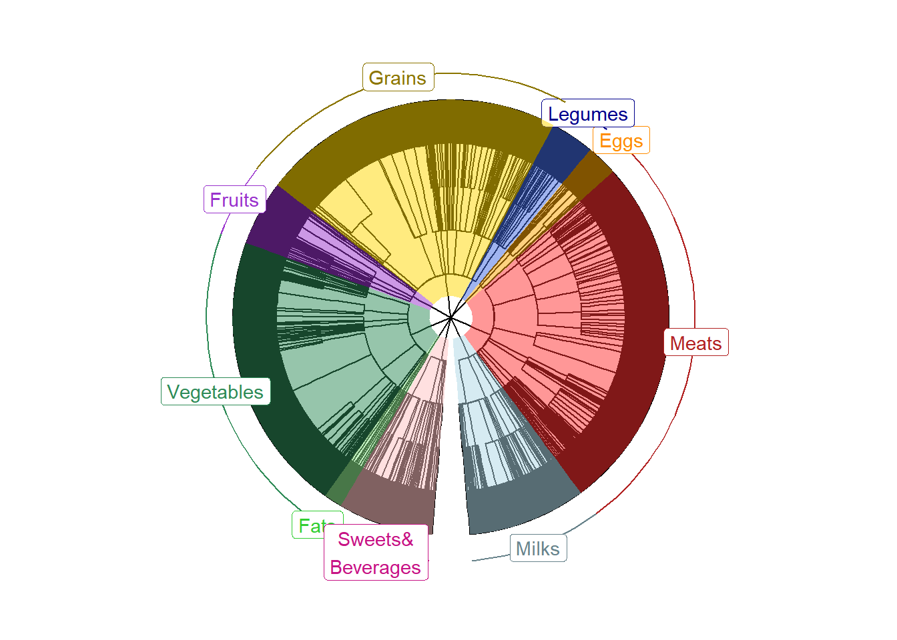

Generate a foodtree from all food items
Introduction
Food trees show the classification of each food item entered in your dietary data. For details, please read Johnson et al., 2021.
This brief script is to serve as an example of formatting and generating food trees with your own dataset. This script demonstrates how to:
- Format food list containing “Main.food.description” and “ModCode” by using the FormatFood function.
- Build a food tree with the entire list of food items in “all.food.desc.txt”.
- Visualize the food tree you have created in step 2.
The functions in Food_tree_scripts folder expects that the input files are tab-delimited txt file with no special characters that impede correct loading, such as:
”
’
#
&
So, we will use the FormatFoods function to replace special characters in the food description column with underscores.
Load functions and packages
Name the path to DietDiveR directory where input files are pulled.
main_wd <- "~/GitHub/DietDiveR"Load the packages/scripts necessary for tree building
Load the reshape2 package necessary for tree building, and if it is not installed, install it.
if (!require("reshape2", quietly = TRUE))install.packages("reshape2")Load the data.tree package necessary for newick.tree.r, and if it is not installed, install it.
if (!require("data.tree", quietly = TRUE))install.packages("data.tree")Load functions necessary for foodtree building.
source("lib/specify_data_dir.R")
source("lib/Food_tree_scripts/newick.tree.r")
source("lib/Food_tree_scripts/check.db.r")
source("lib/Food_tree_scripts/format.foods_2.r")
source("lib/Food_tree_scripts/filter.db.by.diet.records.r")
source("lib/Food_tree_scripts/make.food.tree.r") # This needs 'newick.tree.r' already loaded.
source("lib/Food_tree_scripts/make.food.ifc.r")
source("lib/Food_tree_scripts/make.fiber.ifc.r")
source("lib/Food_tree_scripts/make.dhydrt.ifc.r")Load the packages/scripts necessary for tree visualization
If you have not downloaded and installed the ggtree package yet,you can do so by first installing BiocManager (if you have not done so):
if (!require("BiocManager", quietly = TRUE))install.packages("BiocManager")## Bioconductor version '3.14' is out-of-date; the current release version '3.18'
## is available with R version '4.3'; see https://bioconductor.org/installThen, use BiocManager to install the “ggtree” package.
BiocManager::install("ggtree")Load the functions necessary to visualize foodtrees.
library(ggtree)## ggtree v3.2.1 For help: https://yulab-smu.top/treedata-book/
##
## If you use ggtree in published research, please cite the most appropriate paper(s):
##
## 1. Guangchuang Yu. Using ggtree to visualize data on tree-like structures. Current Protocols in Bioinformatics. 2020, 69:e96. doi:10.1002/cpbi.96
## 2. Guangchuang Yu, Tommy Tsan-Yuk Lam, Huachen Zhu, Yi Guan. Two methods for mapping and visualizing associated data on phylogeny using ggtree. Molecular Biology and Evolution. 2018, 35(12):3041-3043. doi:10.1093/molbev/msy194
## 3. Guangchuang Yu, David Smith, Huachen Zhu, Yi Guan, Tommy Tsan-Yuk Lam. ggtree: an R package for visualization and annotation of phylogenetic trees with their covariates and other associated data. Methods in Ecology and Evolution. 2017, 8(1):28-36. doi:10.1111/2041-210X.12628source("lib/viz_food_tree.r")You can come back to the main directory by:
setwd(main_wd)Load and prepare items data
Food trees show the classification of each food item entered in your dietary data. For details, please read Johnson et al., 2021.
Move to “Food_tree_eg” directory.
SpecifyDataDirectory(directory.name = "eg_data/Food_tree_eg/")## [1] "The data directory has been set as"## [1] "~/GitHub/DietDiveR/eg_data/Food_tree_eg/"Replace special characters such as quotation marks, “%”, with “_“, and create a new FoodID out of foodcode and modcode connected with a period. The FormatFoods function will leave all other columns intact.
FormatFoods(input_fn= "all.food.desc.txt",
output_fn="all.food.desc_formatted.txt")all.food.desc.txt

all.food.desc_formatted.txt

You can also create a list of FoodCode and Main.food.description of additional foods not in ASA24 that you would like to include in the analysis. As an example, Soylent_codes.txt has two columns: FoodCode and Main.food.description. You can generate food codes for the food items unique to your dataset. Be sure to use a nine-digit number that is not already in the all.food.desc.txt.
Soylent_codes.txt

Format this soylent_codes.txt for use - replace special characters with “_“. There are no special characters in this file, so Main.food.description will result in the same as Old.Main.food.description with this particular file.
FormatFoods(input_fn= "Soylent_codes.txt",
output_fn="Soylent_codes_formatted.txt")Soylent_codes_formatted.txt

Generate a food tree with the whole ASA24 food database
Create a folder called “Food_tree_all_ASA24” within “Food_tree_eg” folder to save the output.
Generate a tree with the whole ASA24 food database first as a reference. The file specified by the addl_foods argument will be added to that specified by food_database_fn. NodeLabelsMCT.txt has the full classification level of each food items and its Main.food.description. The classification level (num.levels) will be the basis of hierarchical food tree generation.
MakeFoodTree(nodes_fn= "NodeLabelsMCT.txt",
food_database_fn= "all.food.desc_formatted.txt",
addl_foods_fn= "Soylent_codes_formatted.txt",
num_levels= 4,
output_tree_fn= "Food_tree_all_ASA24/ASA24_4Lv.tree.nwk",
output_taxonomy_fn="Food_tree_all_ASA24/ASA24_4Lv.tax.txt") | Arguments | Description |
|---|---|
| nodes_fn | food level (node) information for each food item. |
| food_database_fn | whole ASA24 database to use. |
| addl_foods_fn | additional foods that are not in ASA24 database but you would like to add; soylent_codes in this case. If none, enter “NULL” instead. |
| num_levels | number of food levels (1 - 5) to save. |
| output_tree_fn | output tree file name. Should end with “.nwk”. |
| output_taxonomy_fn | output taxonomy file (to be used later) name. |
The nodes_fn argument specifies the food level (node) information for each food item. NodeLabelsMCT.txt has the classification level of each food items and its Main.food.description. The classification level will be the basis of hierarchical food tree generation.
NodeLabelsMCT.txt

Visualize your food tree
Load the generated food tree
This will load the .nwk file and save it as a tree object called “tree”. It is OK to see a message saying:
Found more than one class “phylo” in cache; using the first, from namespace ‘phyloseq’
Also defined by ‘tidytree’
tree <- read.tree("Food_tree_all_ASA24/ASA24_4Lv.tree.nwk")tree##
## Phylogenetic tree with 8768 tips and 727 internal nodes.
##
## Tip labels:
## Milk_human, Milk_NFS, Milk_cows_fluid_whole, Milk_cows_fluid_whole_low_sodium, Milk_calcium_fortified_cows_fluid_whole, Milk_calcium_fortified_cows_fluid_1_fat, ...
## Node labels:
## foodtreeroot, L1_Milk_and_Milk_Products, L2_Milks_and_milk_drinks, L3_Milk_human, L4_, L3_Milk_fluid, ...
##
## Rooted; includes branch lengths.Prepare node labels of L1 for plotting. It assumes that the tree file has nine L1 levels.
PrepFoodTreePlots(input.tree=tree)Create a color-coded and annotated food tree with nine L1 levels
It is OK to see some warning messages about Coordinate system and scale for ‘y’ already being present.
VizFoodTree(input.tree=tree, layout="circular")## Coordinate system already present. Adding new coordinate system, which will
## replace the existing one.
## Scale for y is already present.
## Adding another scale for y, which will replace the existing scale.
## Scale for y is already present.
## Adding another scale for y, which will replace the existing scale.
## Coordinate system already present. Adding new coordinate system, which will
## replace the existing one.Look at the color-coded and annotated food tree, saved as annotated_tree.
annotated_tree
Save the tree as a PDF file.
ggsave("Food_tree_all_ASA24/ASA24_4Lv.tree.pdf",
annotated_tree, device="pdf", width=6, height=6, units="in", dpi=300)Come back to the main directory before you start running another script.
setwd(main_wd)